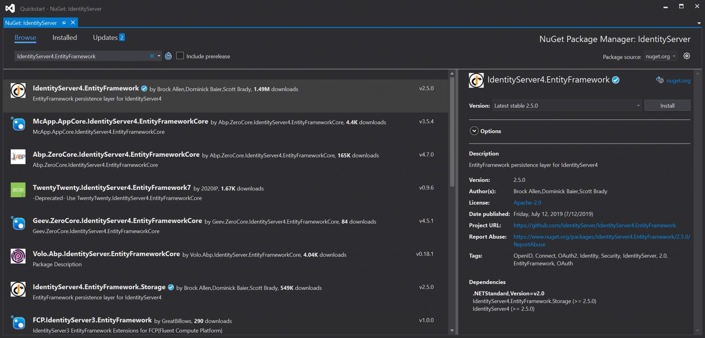
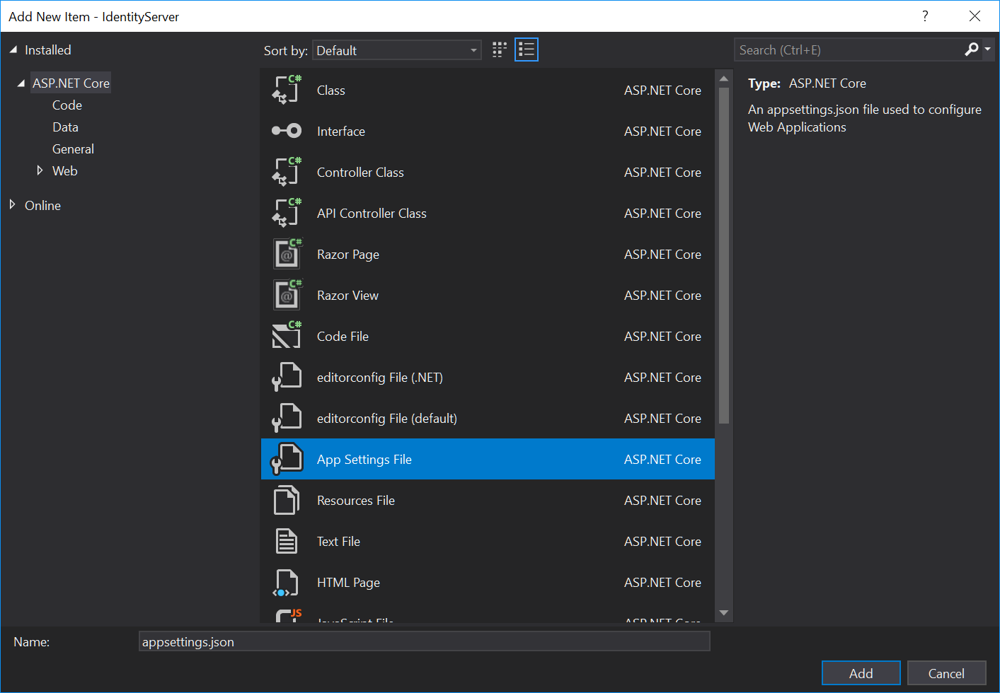
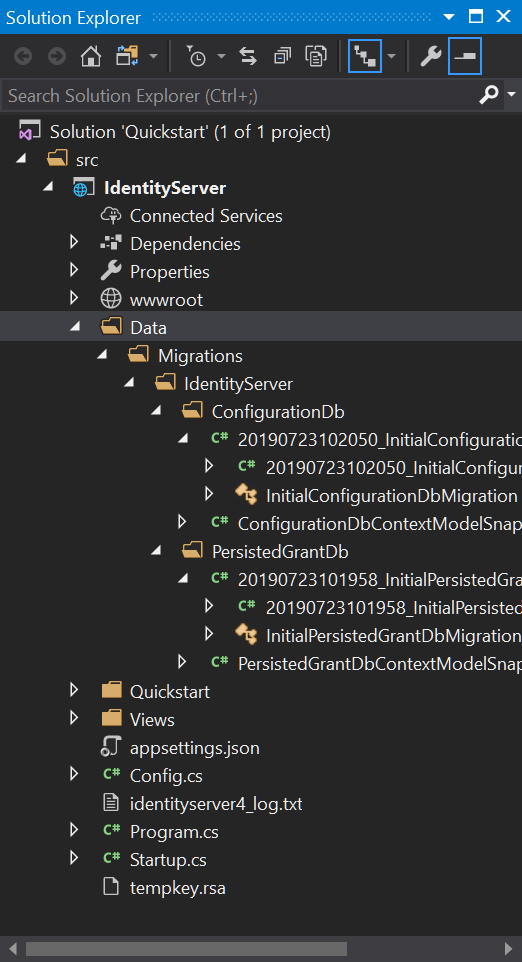
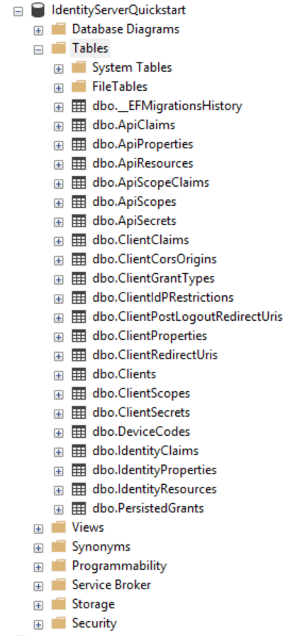
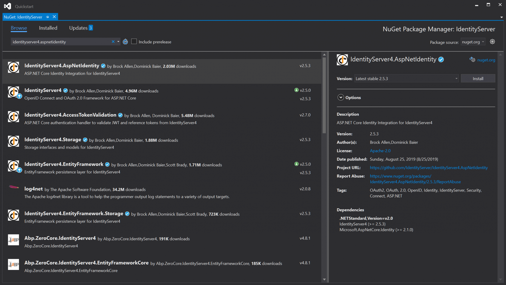

The below Sections will explain how comsoft Identity server has been assembled
Comsoft Identity Server Components
This section will describe Comsoft Identity Server components in details, in addition it will demonstrated how these components have been assembled with each other step by step to make the current version of Comsoft Identity Server.
Comsoft Identity server consists of three main compnents:
- Identity Server 4
- ASP.NET core identity (user Management)
- Customization
Identity Server 4 (ID4)
Setup ID4 in Visual Studio
In order to make our lives a bit easier, the team responsible for IdentityServer4 created dotnet templates to quickstart various ID4 projects. We will start with a quickstart template (including basic UI) to get to know the basic parts of the ID4 first. Let’s follow their command-line instructions so we have the same project structure but I will go more into details of each part of the project. You can find the official quickstart tutorial here but it’s not necessary to have multiple tabs open as I will explain it all here. First, open up the command line and type (or paste) these commands:
dotnet new -i IdentityServer4.Templates
md quickstart
md quickstart
cd quickstart
md src
cd src
dotnet new is4empty -n IdentityServer
dotnet new is4ui -n IdentityServer
cd ..
dotnet new sln -n Quickstart
dotnet sln add .\src\IdentityServer\IdentityServer.csproj
Here we see one solution “Quickstart” with a single project in it called “IdentityServer”. This project is (at the time of writing) by template default a .Net Core 2.1 application. We have “wwwroot” folder which contains all static resources (CSS, js, images). “Quickstart” folder is more interesting as it contains the MVC controllers which control the actions for all pages. Most frequently used are “AccountController.cs” under “Account” subfolder and “HomeController.cs” under “Home” subfolder. We will go through the AccountController in more details below. HomeController contains the default “Index” action responsible for displaying the index page (the welcome page we saw a minute ago). There are other subfolders containing controllers, options, and models for other functionalities like consent, diagnostics, grants, etc.
“Views” folder contains razor views for actions defined in the controllers. Controller actions control the behavior and views make up the visual appearance. In the root folder, we have a “Startup.cs” file that we modified earlier to uncomment lines needed for MVC. “Program.cs” bootstraps the .Net Core application telling it we need to create a web application (with Kestrel by default) and configures the logging. Notice the “identityserver4_log.txt” which is the file automatically created after you run the app for the first time. It contains the runtime logs that you can easily view while running in localhost. The “tempkey.rsa” is also automatically generated to sign the JWT tokens used for OAuth2 and OpenID Connect. We will replace this automatically generated keys in one of the next tutorials to get the application production-ready.
For development, the temporary key is just fine. Root folder also contains “Config.cs” which is currently more-less empty but it can be used to provide in-memory resource and client configuration.
Now let’s get back to the “AccountController.cs”. Most of the changes to the login flow are going to be facilitated here as this controller holds the login and logout action methods. “ExternalController.cs” is kind of the same story but for the external login. Local login is based on the local user store and external login is based on another Identity Provider (think Google for example) and the user logs in into an external user store and is linked back to the local user store. This will also be explained in one of the future tutorials.
Endpoints
Let’s run the IdentityServer4 again and take a look at the interesting endpoints. The welcome page already gives us a clue to it. It is called discovery document endpoint. If you are following the tutorial and running application on localhost port 5000 you should be able to access it here http://localhost:5000/.well-known/openid-configuration. I will format this JSON a bit so it looks nicer for us here:
{
"issuer":"http://localhost:5000",
"jwks_uri":"http://localhost:5000/.well-known/openid-configuration/jwks",
"authorization_endpoint":"http://localhost:5000/connect/authorize",
"token_endpoint":"http://localhost:5000/connect/token",
"userinfo_endpoint":"http://localhost:5000/connect/userinfo",
"end_session_endpoint":"http://localhost:5000/connect/endsession",
"check_session_iframe":"http://localhost:5000/connect/checksession",
"revocation_endpoint":"http://localhost:5000/connect/revocation",
"introspection_endpoint":"http://localhost:5000/connect/introspect",
"device_authorization_endpoint":"http://localhost:5000/connect/deviceauthorization",
"frontchannel_logout_supported":true,
"frontchannel_logout_session_supported":true,
"backchannel_logout_supported":true,
"backchannel_logout_session_supported":true,
"scopes_supported":[
"openid",
"offline_access"
],
"claims_supported":[
"sub"
],
"grant_types_supported":[
"authorization_code",
"client_credentials",
"refresh_token",
"implicit",
"urn:ietf:params:oauth:grant-type:device_code"
],
"response_types_supported":[
"code",
"token",
"id_token",
"id_token token",
"code id_token",
"code token",
"code id_token token"
],
"response_modes_supported":[
"form_post",
"query",
"fragment"
],
"token_endpoint_auth_methods_supported":[
"client_secret_basic",
"client_secret_post"
],
"subject_types_supported":[
"public"
],
"id_token_signing_alg_values_supported":[
"RS256"
],
"code_challenge_methods_supported":[
"plain",
"S256"
]
}
Discovery document is useful to clients using IdentityServer4 as their Identity Provider. It provides all endpoints of interest (authorization endpoint, token endpoint, etc), supported scopes, claims, grant types, response types, response modes, auth methods, token signing algorithms, PKCE code challenge methods.
This saves time as instead of manually providing these endpoints we can just provide the discovery document aka metadata endpoint. It is also useful to developers trying to figure out how to manually invoke endpoints to get the token as it provides the endpoint URLs and supported grant types to know which flows to use.
Another endpoint of high interest is, of course, the login page itself which can be accessed here http://localhost:5000/account/login. We are using HTTP which is a big no-no when entering user credentials as it will be sent to the server in clear text but remember we are in localhost using hard-coded in-memory users at the moment. To get the IdentityServer4 production-ready we will need to make sure we use HTTPS only. This will also be explained in one of the future tutorials along with the certificate implementation for production. Ok, enough chitchat lets login. Type in “alice” as username and password (same values for both, both lowercase, without quotes) and click “Login”.
From in-memory to SQL
Currently, our project is using in-memory storage for configuration data, operational data and user store. Let’s migrate everything but the user store (we will migrate that too but just not now) to permanent storage. The user store is not a feature of IdentityServer4. For IdentityServer4 we will migrate configuration store (client store, api and identity resource store, CORS policy store), operational store (persisted grants store for tokens, codes and consents) but for user store, we need to look elsewhere. The most used user store in .Net world is ASP.NET Identity and we will use it in one of the future tutorials. We can utilize the EntityFramework code-first approach with migrations to create table structure automatically. All we need to do is provide it with an empty database and run migration commands. This example will use the local MSSQL database but I will show you how to use PostgreSQL in my next tutorial so you can keep everything open-source and free.
First things first. Open the “Quickstart” solution in Visual Studio. We need to install the required NuGet package. The easiest way is to right-click the “IdentityServer” project and click “Manage NuGet Packages” to open NuGet Package Manager. Click on the “Browse” tab and type in “IdentityServer4.EntityFramework”.

Once the package is installed you can close the NuGet Package Manager and build the solution to make sure it builds before doing any other changes.
Now we can open the “Startup.cs” file (in the root folder of the project) and take a look at the “ConfigureServices” method. We will remove the service descriptors for IdentityServer4
var builder = services.AddIdentityServer()
.AddInMemoryIdentityResources(Config.GetIdentityResources())
.AddInMemoryApiResources(Config.GetApis())
.AddInMemoryClients(Config.GetClients());
and replace it with IdentityServer4 service configuration that uses SQL server like so
var migrationsAssembly = typeof(Startup).GetTypeInfo().Assembly.GetName().Name;
var builder = services.AddIdentityServer(options =>
{
options.Events.RaiseErrorEvents = true;
options.Events.RaiseInformationEvents = true;
options.Events.RaiseFailureEvents = true;
options.Events.RaiseSuccessEvents = true;
options.UserInteraction.LoginUrl = "/Account/Login";
options.UserInteraction.LogoutUrl = "/Account/Logout";
options.Authentication = new AuthenticationOptions()
{
CookieLifetime = TimeSpan.FromHours(10), // ID server cookie timeout set to 10 hours
CookieSlidingExpiration = true
};
})
.AddConfigurationStore(options =>
{
options.ConfigureDbContext = b => b.UseSqlServer(connectionString, sql => sql.MigrationsAssembly(migrationsAssembly));
})
.AddOperationalStore(options =>
{
options.ConfigureDbContext = b => b.UseSqlServer(connectionString, sql => sql.MigrationsAssembly(migrationsAssembly));
options.EnableTokenCleanup = true;
});
There will be some errors so let’s add missing using directives at the start of the “Startup.cs” file like so
using System.Reflection;
using IdentityServer4.Configuration;
using Microsoft.EntityFrameworkCore;
using Microsoft.Extensions.Configuration;
We will also modify the constructor to accept the injected IConfiguration reference (and create a property to hold it) so we can access the database connection string
public IHostingEnvironment Environment { get; }
public IConfiguration Configuration { get; }
public Startup(IHostingEnvironment environment, IConfiguration configuration)
{
Environment = environment;
Configuration = configuration;
}
You might notice that we are expecting “DefaultConnection” connection string but we don’t even have an “appsettings.json” file created yet. So let’s add it by right-clicking the “IdentityServer” project → Add → New Item… and select “App Settings File”.
This will conveniently create an “appsettings.json” file in the root folder of our project with the “DefaultConnection” already specified. We need to change the database name to something that makes a bit more sense like so
{
"ConnectionStrings": {
"DefaultConnection": "Server=(localdb)\MSSQLLocalDB;Database=IdentityServerQuickstart;Trusted_Connection=True;MultipleActiveResultSets=true"
}
}
{
"ConnectionStrings": {
"DefaultConnection": "Server=(localdb)\MSSQLLocalDB;Database=IdentityServer;Trusted_Connection=True;MultipleActiveResultSets=true"
}
}
After a successful login creates a new empty database called “IdentityServer” as specified in the connection string.
Alright, we are now all set to add code-first migrations to the IdentityServer4 Quickstart project and let it create a database structure (tables) needed for the Operation store and Configuration store.
Migrations
Open the Package Manager Console in Visual Studio. You can easily do that by typing “package manager console” in Visual Studio search box at the top. Execute these two commands to create migrations for Operation store and Configuration store
Add-Migration InitialPersistedGrantDbMigration -c PersistedGrantDbContext -o Data/Migrations/IdentityServer/PersistedGrantDb
Add-Migration InitialConfigurationDbMigration -c ConfigurationDbContext -o Data/Migrations/IdentityServer/ConfigurationDb
Now we have new folders with structure “Data\Migrations\IdentityServer” holding the migrations for the Identity Server stores. Remember, we still didn’t migrate to the user store. We will do that in the future tutorial and the migration for user store will also go into the “Data\Migrations” folder but not under the “IdentityServer” folder.
Tables
Let’s take a look at the tables and talk about each one a bit. We didn’t specify a custom schema so all tables are created in the default “dbo” schema. This can be easily updated later but is out of the scope of this tutorial.

- “dbo.__EFMigrationsHistory” table is keeping track of the history of the code-first migrations and is not related to IdentityServer4.
- “dbo.ApiClaims” table is holding claim types for user claims that will be included in the access token for a specific API resource.
- “dbo.ApiProperties” table is holding additional custom key-value pairs related to the specific API resource.
- “dbo.ApiResources” table is holding resources that represent APIs that need to be protected.
- “dbo.ApiScopeClaims” table is defining which user claims will be included in the access token for a specified scope.
- “dbo.ApiScopes” table is holding possible scopes for a specific API resource
- “dbo.ApiSecrets” table is holding API resource secrets used by the introspection endpoint (used when using access token as reference token as opposed to JWT)
- “dbo.ClientClaims” table is holding additional claims that will be included in the access token for a specific client.
- “dbo.ClientCorsOrigins” table is holding allowed origins for a specific client
- “dbo.ClientGrantTypes” table is holding allowed grant types for a specific client. Grant types specify which flows and endpoints can be used for authentication and/or authorization.
- “dbo.ClientIdPRestrictions” table specifies which external providers can be used for a specific client. If not specified the user will see all possible external providers on the login page but if the external provider is specified only those specified (whitelisted) will be available/visible to the user.
- “dbo.ClientPostLogoutRedirectUris” table specifies which URIs are allowed for redirect after logout for a specific client.
- “dbo.ClientProperties” table is holding additional custom key-value pairs related to the specific client.
- “dbo.ClientRedirectUris” table specifies which URIs are allowed to redirect to after successful login for a specific client.
- “dbo.Clients” table is holding clients. Clients in this context are actually applications (web, desktop, native, SPA, etc.)
- “dbo.ClientScopes” table holds allowed scopes (identity and resource scopes) for a specific client.
- “dbo.ClientSecrets” table is holding secrets for a specific client. Client Id and Client Secret is usually used for machine-to-machine authorization to obtain access token but it can be used with other flows too. The client secret is not used with apps that can’t keep a secret like native apps for example where PKCE is preferred.
- “dbo.DeviceCodes” table is holding the (usually numeric) user codes issued for the device authorization
- “dbo.IdentityClaims” table is holding claim types for the user claims that will be included in the access token for a specific identity resource.
- “dbo.IdentityProperties” table is holding additional custom key-value pairs related to the specific identity resource.
- “dbo.IdentityResources” table specifies user resources like user id, email, name, etc. Some of them are standard like “openid” which specifies the “sub” subject claim is required for OpenID Connect.
- “dbo.PersistedGrants” table is holding permissions (grants) given to clients (apps) by the users
ASP.NET Core Identity
The official explanation from Microsoft docs is: “ASP.NET Core Identity is a membership system that adds login functionality to ASP.NET Core apps. Users can create an account with the login information stored in Identity or they can use an external login provider.” and “Identity can be configured using a SQL Server database to store user names, passwords, and profile data.”.
So it is a membership system that takes care of members (another word for users) and it is used by ASP.NET Core apps (what we are building). Users can create local accounts stored in Identity (another name for user store) or can use any external provider like Google, Okta, Microsoft, Facebook, etc. User data can be persisted to a standard SQL database (which we already have). ASP.NET Identity standardizes user store with structure (tables) and methods to manipulate the store. For example to create a new user account, just invoke a method. It will validate the data and store it in a database. To log in, just invoke a login method, it will validate the password (for a local login) and return a valid response.
To set or change the password, just invoke a method and the password will get hashed and stored in the database. So a user store is a set of business logic contained in the methods that operate on data storage. The data structure of user tables is standardized so one day when ASP.NET Core is updated it will be easy to reuse existing tables or run a migration to another storage if needed.
This is opposite to a custom user store where the data structure is custom so manual migration must be performed. Sometimes migration is not even possible because the password hashing algorithm used in the old and new store is different and there is no way to extract the plain text password from hashes and re-hash it. Business logic contained in methods for the ASP.NET Identity user store is tested, security standards are validated and are pretty much stable and secure as you can get it. It doesn’t cover all scenarios but it’s really easy to extend it as shown in one of my next tutorials where we will add a custom property to a user.
Why do we even need ASP.NET Core Identity?
We need it because IdentityServer4 doesn’t care about the users. It handles token generation, token endpoints, discovery endpoint, OAuth2 and OIDC protocols, clients, scopes, all the important bits except for the users. In order to get our Identity Server to start caring about the users (local and external), we should provide it with a user store.
ASP.NET Identity is a good match as it’s a mature system for user management that is used by all ASP.NET applications, .net core and .net framework. You can use ASP.NET Core Identity without IdentityServer4 to authenticate single application but you lose the ability to create an Identity Provider (IdP) which is a whole point of these tutorials to have an SSO provider for all apps and not redo the auth for each app individually.
Changes needed to implement ASP.NET Core Identity
Let’s start by adding a NuGet package for IdentityServer4 ASP.NET Core Identity support. The package name is “IdentityServer4.AspNetIdentity”.
Now we will add the ApplicationUser class that will inherit from the IdentityUser class. The reason for this is to be able to extend IdentityUser in the future (add additional properties to the user entity).For now, we will just create a new folder called “Models” and add “ApplicationUser.cs” file to hold the class definition like so
using Microsoft.AspNetCore.Identity;
namespace IdentityServer.Models
{
public class ApplicationUser : IdentityUser
{
}
}
The next step will scaffold MVC controllers and views for ASP.NET Identity. This step is not mandatory as the same functionality can be obtained by just using the NuGet package for ASP.NET Core Identity (“Microsoft.AspNetCore.Identity”). The difference is that scaffolding these resources in our project directly will allow for easy modification of the look and feel of ASP.NET Core Identity.
In Solution Explorer right-click on “Identity Server” project → Add → New Scaffolded Item

The “Add Scaffold” dialog should pop-up, select “Identity” and click “Add”
The “Add Identity” dialog will pop-up. Select an existing Layout.cshtml file, in our project the location is “~/Views/Shared/_Layout.cshtml”. Click on “Override all files” checkbox to select all files. We need to create a new data context class, let’s call it “IdentityServer.Models.IdentityDbContext”. We will also specify the user class, so let’s use the “ApplicationUser” we added in the previous step.
Wait a bit for Visual Studio to do its magic and you should see a new folder called “Areas” containing all juicy ASP.NET Core views and controllers for us to play with.
Let’s just reorganize a bit for easier maintenance in the future. Move (drag and drop) “IdentityDbContext.cs” file from “Areas/Identity/Data” into the “Data” folder in the project root. You can now delete the “Areas/Identity/Data” folder.
using Microsoft.AspNetCore.Hosting;
[assembly: HostingStartup(typeof(IdentityServer.Areas.Identity.IdentityHostingStartup))]
namespace IdentityServer.Areas.Identity
{
public class IdentityHostingStartup : IHostingStartup
{
public void Configure(IWebHostBuilder builder)
{
builder.ConfigureServices((context, services) => {
});
}
}
}
Last thing to remove is “Quickstart/TestUsers.cs” file that contains TestUsers class that initializes dummy users. We don’t need it anymore as when we finish all code changes the users will come from user store. Feel free to delete the “Quickstart/TestUsers.cs” file now.
Refactoring time. Open “Startup.cs” to add missing bits for ASP.NET Core Identity.
Add missing “using” directives
using IdentityServer.Models;
using Microsoft.AspNetCore.Identity;
Add code snippet for IdentityDbContext and ASP.NET Core Identity service (add it above the IdentityServer service configuration, above the “AddIdentityServer” extension method)
services.AddDbContext
(options =>
options.UseSqlServer(connectionString, sql => sql.MigrationsAssembly(migrationsAssembly))
);
services.AddIdentity <ApplicationUser, IdentityRole>
(options =>
{
options.SignIn.RequireConfirmedEmail = true;
})
.AddEntityFrameworkStores<IdentityDbContext>
()
.AddDefaultTokenProviders();
Last thing to add in Startup is to add ASP.NET Core Identity to IdentityService service configuration (after the “AddOperationStore”)
.AddAspNetIdentity(); This is the complete ConfigureServices method body with ASP.NET Core Identity changes from above
public void ConfigureServices(IServiceCollection services)
{
// uncomment, if you wan to add an MVC-based UI
services.AddMvc().SetCompatibilityVersion(Microsoft.AspNetCore.Mvc.CompatibilityVersion.Version_2_1);
string connectionString = Configuration.GetConnectionString("DefaultConnection");
var migrationsAssembly = typeof(Startup).GetTypeInfo().Assembly.GetName().Name;
services.AddDbContext<IdentityDbContext>
(options =>
options.UseSqlServer(connectionString, sql => sql.MigrationsAssembly(migrationsAssembly))
);
services.AddIdentity<ApplicationUser, IdentityRole>
(options =>
{
options.SignIn.RequireConfirmedEmail = true;
})
.AddEntityFrameworkStores<IdentityDbContext>
()
.AddDefaultTokenProviders();
var builder = services.AddIdentityServer(options =>
{
options.Events.RaiseErrorEvents = true;
options.Events.RaiseInformationEvents = true;
options.Events.RaiseFailureEvents = true;
options.Events.RaiseSuccessEvents = true;
options.UserInteraction.LoginUrl = "/Account/Login";
options.UserInteraction.LogoutUrl = "/Account/Logout";
options.Authentication = new AuthenticationOptions()
{
CookieLifetime = TimeSpan.FromHours(10), // ID server cookie timeout set to 10 hours
CookieSlidingExpiration = true
};
})
.AddConfigurationStore(options =>
{
options.ConfigureDbContext = b => b.UseSqlServer(connectionString, sql => sql.MigrationsAssembly(migrationsAssembly));
})
.AddOperationalStore(options =>
{
options.ConfigureDbContext = b => b.UseSqlServer(connectionString, sql => sql.MigrationsAssembly(migrationsAssembly));
options.EnableTokenCleanup = true;
})
.AddAspNetIdentity
();
if (Environment.IsDevelopment())
{
builder.AddDeveloperSigningCredential();
}
else
{
throw new Exception("need to configure key material");
}
}
If you try to build the solution now you will get two errors one in “AccountController” and another in “ExternalController”. This is because we removed the “TestUsers” class and we need to update local login and external login controllers to use the ASP.NET Core Identity user store.
“Quickstart/Account/AccountController.cs” changes
Add missing “using” directives
using IdentityServer4.Test;
Remove obsolete “using” directive
using IdentityServer.Models;
using Microsoft.AspNetCore.Identity;
Remove obsolete variable
private readonly TestUserStore _users;
Add private variables to hold injected references of UserManager and SignInManager
private readonly UserManager<ApplicationUser> _userManager;
private readonly SignInManager<ApplicationUser> _signInManager;
Replace the constructor with code below
public AccountController(
UserManager<ApplicationUser>
userManager,
SignInManager<ApplicationUser>
signInManager,
IIdentityServerInteractionService interaction,
IClientStore clientStore,
IAuthenticationSchemeProvider schemeProvider,
IEventService events)
{
_userManager = userManager;
_signInManager = signInManager;
_interaction = interaction;
_clientStore = clientStore;
_schemeProvider = schemeProvider;
_events = events;
}
Replace second “Login” method with code below. This change will remove code that used the “TestUsers” class and use UserManager and SignInManager instead.
public async Task
Login(LoginInputModel model, string button)
{
// check if we are in the context of an authorization request
var context = await _interaction.GetAuthorizationContextAsync(model.ReturnUrl);
// the user clicked the "cancel" button
if (button != "login")
{
if (context != null)
{
// if the user cancels, send a result back into IdentityServer as if they
// denied the consent (even if this client does not require consent).
// this will send back an access denied OIDC error response to the client.
await _interaction.GrantConsentAsync(context, ConsentResponse.Denied);
// we can trust model.ReturnUrl since GetAuthorizationContextAsync returned non-null
if (await _clientStore.IsPkceClientAsync(context.ClientId))
{
// if the client is PKCE then we assume it's native, so this change in how to
// return the response is for better UX for the end user.
return View("Redirect", new RedirectViewModel { RedirectUrl = model.ReturnUrl });
}
return Redirect(model.ReturnUrl);
}
else
{
// since we don't have a valid context, then we just go back to the home page
return Redirect("~/");
}
}
if (ModelState.IsValid)
{
var result = await _signInManager.PasswordSignInAsync(model.Username, model.Password, model.RememberLogin, lockoutOnFailure: true);
if (result.Succeeded)
{
var user = await _userManager.FindByNameAsync(model.Username);
await _events.RaiseAsync(new UserLoginSuccessEvent(user.UserName, user.Id, user.UserName));
if (context != null)
{
if (await _clientStore.IsPkceClientAsync(context.ClientId))
{
// if the client is PKCE then we assume it's native, so this change in how to
// return the response is for better UX for the end user.
return View("Redirect", new RedirectViewModel { RedirectUrl = model.ReturnUrl });
}
// we can trust model.ReturnUrl since GetAuthorizationContextAsync returned non-null
return Redirect(model.ReturnUrl);
}
// request for a local page
if (Url.IsLocalUrl(model.ReturnUrl))
{
return Redirect(model.ReturnUrl);
}
else if (string.IsNullOrEmpty(model.ReturnUrl))
{
return Redirect("~/");
}
else
{
// user might have clicked on a malicious link - should be logged
throw new Exception("invalid return URL");
}
}
await _events.RaiseAsync(new UserLoginFailureEvent(model.Username, "invalid credentials"));
ModelState.AddModelError(string.Empty, AccountOptions.InvalidCredentialsErrorMessage);
}
// something went wrong, show form with error
var vm = await BuildLoginViewModelAsync(model);
return View(vm);
}
Replace the second “Logout” method with code below. This change will use SignInManager for logout.
public async Task
Logout(LogoutInputModel model)
{
// build a model so the logged out page knows what to display
var vm = await BuildLoggedOutViewModelAsync(model.LogoutId);
if (User?.Identity.IsAuthenticated == true)
{
// delete local authentication cookie
await _signInManager.SignOutAsync();
// raise the logout event
await _events.RaiseAsync(new UserLogoutSuccessEvent(User.GetSubjectId(), User.GetDisplayName()));
}
// check if we need to trigger sign-out at an upstream identity provider
if (vm.TriggerExternalSignout)
{
// build a return URL so the upstream provider will redirect back
// to us after the user has logged out. this allows us to then
// complete our single sign-out processing.
string url = Url.Action("Logout", new { logoutId = vm.LogoutId });
// this triggers a redirect to the external provider for sign-out
return SignOut(new AuthenticationProperties { RedirectUri = url }, vm.ExternalAuthenticationScheme);
}
return View("LoggedOut", vm);
}
Last change in AccountController is to replace the “BuildLoginViewModelAsync” with the code below.
private async Task
BuildLoginViewModelAsync(string returnUrl)
{
var context = await _interaction.GetAuthorizationContextAsync(returnUrl);
if (context?.IdP != null)
{
// this is meant to short circuit the UI and only trigger the one external IdP
return new LoginViewModel
{
EnableLocalLogin = false,
ReturnUrl = returnUrl,
Username = context?.LoginHint,
ExternalProviders = new ExternalProvider[] { new ExternalProvider { AuthenticationScheme = context.IdP } }
};
}
var schemes = await _schemeProvider.GetAllSchemesAsync();
var providers = schemes
.Where(x => x.DisplayName != null ||
(x.Name.Equals(AccountOptions.WindowsAuthenticationSchemeName, StringComparison.OrdinalIgnoreCase))
)
.Select(x => new ExternalProvider
{
DisplayName = x.DisplayName,
AuthenticationScheme = x.Name
}).ToList();
var allowLocal = true;
if (context?.ClientId != null)
{
var client = await _clientStore.FindEnabledClientByIdAsync(context.ClientId);
if (client != null)
{
allowLocal = client.EnableLocalLogin;
if (client.IdentityProviderRestrictions != null && client.IdentityProviderRestrictions.Any())
{
providers = providers.Where(provider => client.IdentityProviderRestrictions.Contains(provider.AuthenticationScheme)).ToList();
}
}
}
return new LoginViewModel
{
AllowRememberLogin = AccountOptions.AllowRememberLogin,
EnableLocalLogin = allowLocal && AccountOptions.AllowLocalLogin,
ReturnUrl = returnUrl,
Username = context?.LoginHint,
ExternalProviders = providers.ToArray()
};
}
AccountController is done. This will take care of the local login to use the ASP.NET Core Identity user store. Let’s work on the ExternalController now. An external controller handles external logins (from Okta, Google, Azure AD, etc.)
“Quickstart/Account/ExternalController.cs” changes
Remove obsolete “using” directive
using IdentityServer4.Test;Add missing “using” directives
using IdentityServer.Models;
using Microsoft.AspNetCore.Identity;
Remove obsolete variable
private readonly TestUserStore _users;
Add private variables to hold injected references of UserManager and SignInManager
private readonly UserManager<ApplicationUser>
_userManager;
private readonly SignInManager<ApplicationUser> _signInManager;
Replace the constructor with code below
public ExternalController(
UserManager<ApplicationUser>
userManager,
SignInManager<ApplicationUser>
signInManager,
IIdentityServerInteractionService interaction,
IClientStore clientStore,
IEventService events)
{
_userManager = userManager;
_signInManager = signInManager;
_interaction = interaction;
_clientStore = clientStore;
_events = events;
}
Replace the “Callback” method with code below. This will help us split up functionality across several methods.
public async Task
Callback()
{
// read external identity from the temporary cookie
var result = await HttpContext.AuthenticateAsync(IdentityConstants.ExternalScheme);
if (result?.Succeeded != true)
{
throw new Exception("External authentication error");
}
// lookup our user and external provider info
var (user, provider, providerUserId, claims) = await FindUserFromExternalProviderAsync(result);
if (user == null)
{
// this might be where you might initiate a custom workflow for user registration
// in this sample we don't show how that would be done, as our sample implementation
// simply auto-provisions new external user
user = await AutoProvisionUserAsync(provider, providerUserId, claims);
}
// this allows us to collect any additonal claims or properties
// for the specific prtotocols used and store them in the local auth cookie.
// this is typically used to store data needed for signout from those protocols.
var additionalLocalClaims = new List
();
var localSignInProps = new AuthenticationProperties();
ProcessLoginCallbackForOidc(result, additionalLocalClaims, localSignInProps);
ProcessLoginCallbackForWsFed(result, additionalLocalClaims, localSignInProps);
ProcessLoginCallbackForSaml2p(result, additionalLocalClaims, localSignInProps);
// issue authentication cookie for user
// we must issue the cookie maually, and can't use the SignInManager because
// it doesn't expose an API to issue additional claims from the login workflow
var principal = await _signInManager.CreateUserPrincipalAsync(user);
additionalLocalClaims.AddRange(principal.Claims);
var name = principal.FindFirst(JwtClaimTypes.Name)?.Value ?? user.Id;
await _events.RaiseAsync(new UserLoginSuccessEvent(provider, providerUserId, user.Id, name));
await HttpContext.SignInAsync(user.Id, name, provider, localSignInProps, additionalLocalClaims.ToArray());
// delete temporary cookie used during external authentication
await HttpContext.SignOutAsync(IdentityConstants.ExternalScheme);
// validate return URL and redirect back to authorization endpoint or a local page
var returnUrl = result.Properties.Items["returnUrl"];
if (_interaction.IsValidReturnUrl(returnUrl) || Url.IsLocalUrl(returnUrl))
{
return Redirect(returnUrl);
}
return Redirect("~/");
}
Replace the “FindUserFromExternalProviderAsync” method with code below. It will add couple more ways to match local user with the external user using different claims like name, email, preferred name.
private async Task<(ApplicationUser user, string provider, string providerUserId, IEnumerable<Claim >
claims)>
FindUserFromExternalProviderAsync(FindUserFromExternalProviderAsyncAuthenticateResult result)
{
var externalUser = result.Principal;
// try to determine the unique id of the external user (issued by the provider)
// the most common claim type for that are the sub claim and the NameIdentifier
// depending on the external provider, some other claim type might be used
var userIdClaim = externalUser.FindFirst(JwtClaimTypes.Subject) ??
externalUser.FindFirst(ClaimTypes.NameIdentifier) ??
throw new Exception("Unknown userid");
// remove the user id claim so we don't include it as an extra claim if/when we provision the user
var claims = externalUser.Claims.ToList();
claims.Remove(userIdClaim);
var provider = result.Properties.Items["scheme"];
var providerUserId = userIdClaim.Value;
// find external user
var user = await _userManager.FindByLoginAsync(provider, providerUserId);
// try to find user by name and/or email
if (user == null)
{
var name = claims.FirstOrDefault(x => x.Type == JwtClaimTypes.Name)?.Value ?? claims.FirstOrDefault(x => x.Type == ClaimTypes.Name)?.Value;
if (name != null)
{
user = await _userManager.FindByNameAsync(name);
}
if (user == null)
{
var prefname = claims.FirstOrDefault(x => x.Type == JwtClaimTypes.PreferredUserName)?.Value;
if (prefname != null)
{
user = await _userManager.FindByNameAsync(prefname);
}
}
if (user == null)
{
var email = claims.FirstOrDefault(x => x.Type == JwtClaimTypes.Email)?.Value ?? claims.FirstOrDefault(x => x.Type == ClaimTypes.Email)?.Value;
if (email != null)
{
user = await _userManager.FindByEmailAsync(email);
}
}
if (user != null)
{
var identityResult = await _userManager.AddLoginAsync(user, new UserLoginInfo(provider, providerUserId, provider));
if (!identityResult.Succeeded) throw new Exception(identityResult.Errors.First().Description);
}
}
return (user, provider, providerUserId, claims);
Finally, the last change is to replace the “AutoProvisionUser” method with the code below. This method is in charge of creating a new local user for the external user login if the local user couldn’t be found in the local user store.
private async Task
AutoProvisionUserAsync(string provider, string providerUserId, IEnumerable
claims)
{
// create a list of claims that we want to transfer into our store
var filtered = new List
();
// user's display name
var name = claims.FirstOrDefault(x => x.Type == JwtClaimTypes.Name)?.Value ??
claims.FirstOrDefault(x => x.Type == ClaimTypes.Name)?.Value;
if (name != null)
{
filtered.Add(new Claim(JwtClaimTypes.Name, name));
}
else
{
var first = claims.FirstOrDefault(x => x.Type == JwtClaimTypes.GivenName)?.Value ??
claims.FirstOrDefault(x => x.Type == ClaimTypes.GivenName)?.Value;
var last = claims.FirstOrDefault(x => x.Type == JwtClaimTypes.FamilyName)?.Value ??
claims.FirstOrDefault(x => x.Type == ClaimTypes.Surname)?.Value;
if (first != null && last != null)
{
filtered.Add(new Claim(JwtClaimTypes.Name, first + " " + last));
}
else if (first != null)
{
filtered.Add(new Claim(JwtClaimTypes.Name, first));
}
else if (last != null)
{
filtered.Add(new Claim(JwtClaimTypes.Name, last));
}
}
// email
var email = claims.FirstOrDefault(x => x.Type == JwtClaimTypes.Email)?.Value ??
claims.FirstOrDefault(x => x.Type == ClaimTypes.Email)?.Value;
if (email != null)
{
filtered.Add(new Claim(JwtClaimTypes.Email, email));
}
var user = new ApplicationUser
{
UserName = Guid.NewGuid().ToString(),
};
var identityResult = await _userManager.CreateAsync(user);
if (!identityResult.Succeeded) throw new Exception(identityResult.Errors.First().Description);
if (filtered.Any())
{
identityResult = await _userManager.AddClaimsAsync(user, filtered);
if (!identityResult.Succeeded) throw new Exception(identityResult.Errors.First().Description);
}
identityResult = await _userManager.AddLoginAsync(user, new UserLoginInfo(provider, providerUserId, provider));
if (!identityResult.Succeeded) throw new Exception(identityResult.Errors.First().Description);
return user;
Customization
Signing Credential Certificate
By default, Identity Server uses Temporary Signing Certificate to sign the JWT tokens via this method: .AddDeveloperSigningCredential().which is fine for development but in production a certificate should be used. Comsoft Identity server load customize to load the certificate from the store dynamically, the below are the steps developed to achieve this:
Create new function in startup class to load the certificate from the windows server certificates store
public X509Certificate2 LoadCertificate()
{
string thumbPrint = Configuration.GetValue
("CertficateName");
// Starting with the .NET Framework 4.6, X509Store implements IDisposable.
// On older .NET, store.Close should be called.
using (var store = new X509Store(StoreName.My, StoreLocation.LocalMachine))
{
store.Open(OpenFlags.ReadOnly);
var certCollection = store.Certificates.Find(X509FindType.FindByThumbprint, thumbPrint, validOnly: false);
if (certCollection.Count == 0)
throw new Exception("No certificate found containing the specified thumbprint.");
return certCollection[0];
}
}
Modifiy the below lines of codes in ConfigureServices method inside startup class
if (Environment.IsDevelopment())
{
builder.AddDeveloperSigningCredential();
}
else
{
builder.AddSigningCredential(LoadCertificate());
//throw new Exception("need to configure key material");
}
Add new configuration section in appsettings.json file called "CertficateName", the value "xx" will replaced later with the certifcate name in the server during the deployment process
{
"ConnectionStrings": {
"DefaultConnection": "Data Source=.;Initial Catalog=ComsoftIdentityServer;Integrated Security=True"
},
"Data": {
"Seed": false
},
"CertficateName":"xx"
}
Custom actions for user management
The blow API's custom actions developed to help dvelopers to integrate with IDS4 , these actions has been developed in CustomAccountController in the below location:
“\src\IdentityServer\Quickstart\Admin\CustomAccountController.cs”

Register User Async Action:
public async Task
RegisterUserAsync(string username ,string password)
{
var user = new ApplicationUser { UserName = username, Email = username,EmailConfirmed=true,IsEnabled=true };
var result = await _userManager.CreateAsync(user, password);
var Errorlist = "##";
if (result.Succeeded)
{
// _logger.LogInformation("User created a new account with password.");
return "done";
}
foreach (var error in result.Errors)
{
Errorlist = Errorlist +"\n" + error.Description;
}
return Errorlist;
}
Change User Password Async:
public async Task
ChangeUserPasswordAsync(string username,string currentpassword, string newpassword)
{
var user = await _userManager.FindByNameAsync(username);
var result = await _userManager.ChangePasswordAsync(user, currentpassword, newpassword);
var Errorlist = "##";
if (result.Succeeded)
{
// _logger.LogInformation("User created a new account with password.");
return "done";
}
foreach (var error in result.Errors)
{
Errorlist = Errorlist + "\n" + error.Description;
}
return Errorlist;
}
Generate Password Reset Token Async:
public async Task
GeneratePasswordResetTokenAsync(string username)
{
var user = await _userManager.FindByNameAsync(username);
var result = await _userManager.GeneratePasswordResetTokenAsync(user);
var Errorlist = "##";
if (result.IsNullOrEmpty())
{
// _logger.LogInformation("User created a new account with password.");
return Errorlist + " Enable to generate restet password token ";
}
else
return result;
}
Reset User Password Async
public async Task
ResetUserPasswordAsync(string username, string newpassword,string resettoken)
{
var user = await _userManager.FindByNameAsync(username);
var result = await _userManager.ResetPasswordAsync(user, resettoken, newpassword);
var Errorlist = "##";
if (result.Succeeded)
{
// _logger.LogInformation("User created a new account with password.");
return "done";
}
foreach (var error in result.Errors)
{
Errorlist = Errorlist + "\n" + error.Description;
}
return Errorlist;
}
Custom authentication message for locked userUpdated version 1.3.0
IDS4 currently returns the same authentication result message if the user provides an invalid credentials or if the user was locked due exceeded the number of failed trials, this might confuse the developers who will integrate their applications with IDS4, this scenario is applicable for Resource owner flow only.
To resolve the above issue a new class has been added in root level to handle this issue called “ResourceOwnerPasswordValidator.cs” .

ResourceOwnerPasswordValidator code:
using IdentityServer4.Models;
using IdentityServer4.Validation;
using Microsoft.AspNetCore.Identity;
using Microsoft.Extensions.Logging;
using System.Threading.Tasks;
using static IdentityModel.OidcConstants;
using IdentityServer4.Services;
using IdentityServer4.Events;
using IdentityServer.Models;
namespace IdentityServer
{
public class ResourceOwnerPasswordValidator
: IResourceOwnerPasswordValidator
where ApplicationUser : class
{
private readonly SignInManager
_signInManager;
private IEventService _events;
private readonly UserManager
_userManager;
private readonly ILogger> _logger;
public ResourceOwnerPasswordValidator(
UserManager userManager,
SignInManager signInManager,
IEventService events,
ILogger> logger)
{
_userManager = userManager;
_signInManager = signInManager;
_events = events;
_logger = logger;
}
public virtual async Task ValidateAsync(ResourceOwnerPasswordValidationContext context)
{
var user = await _userManager.FindByNameAsync(context.UserName);
if (user != null)
{
var result = await _signInManager.CheckPasswordSignInAsync(user, context.Password, true);
if (result.Succeeded)
{
var sub = await _userManager.GetUserIdAsync(user);
_logger.LogInformation("Credentials validated for username: {username}", context.UserName);
await _events.RaiseAsync(new UserLoginSuccessEvent(context.UserName, sub, context.UserName, interactive: false));
context.Result = new GrantValidationResult(sub, AuthenticationMethods.Password);
return;
}
else if (result.IsLockedOut)
{
_logger.LogInformation("Authentication failed for username: {username}, reason: locked out", context.UserName);
await _events.RaiseAsync(new UserLoginFailureEvent(context.UserName, "** User locked out", interactive: false));
context.Result = new GrantValidationResult(TokenRequestErrors.InvalidClient, "** User locked out" );
}
else if (result.IsNotAllowed)
{
_logger.LogInformation("Authentication failed for username: {username}, reason: not allowed", context.UserName);
await _events.RaiseAsync(new UserLoginFailureEvent(context.UserName, "not allowed", interactive: false));
context.Result = new GrantValidationResult(TokenRequestErrors.InvalidGrant);
}
else
{
_logger.LogInformation("Authentication failed for username: {username}, reason: invalid credentials", context.UserName);
await _events.RaiseAsync(new UserLoginFailureEvent(context.UserName, "invalid credentials", interactive: false));
context.Result = new GrantValidationResult(TokenRequestErrors.InvalidGrant);
}
}
else
{
_logger.LogInformation("No user found matching username: {username}", context.UserName);
await _events.RaiseAsync(new UserLoginFailureEvent(context.UserName, "invalid username", interactive: false));
context.Result = new GrantValidationResult(TokenRequestErrors.InvalidGrant);
}
}
}
}